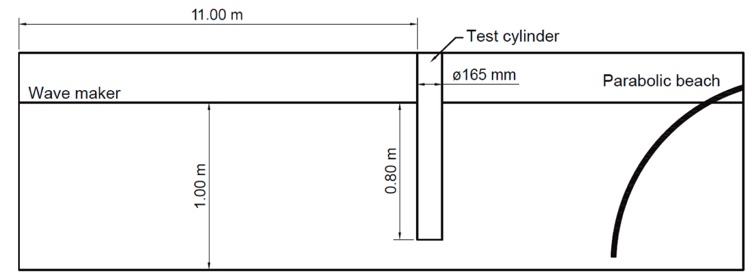
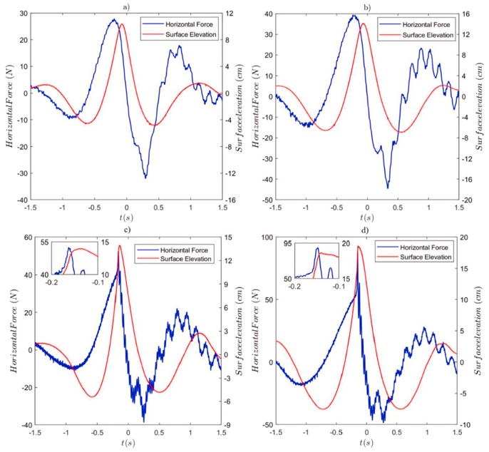

Experimental study of the forces imposed by wave groups on a cylinder
This study aimed at analysing qualitatively the nature of rogue wave impact forces on a cylinder by carry out physical experiments in a wave tank.
This study was motivated by the relevance of spilling breaking waves in the design of offshore structures and it intends to fill the gap in the study of this type of waves, in which no extensive research has been done. Therefore, we focused in comparing the wave loading from highly nonlinear non-breaking and spilling breaking wave conditions in a wave tank. To generate this waves, we used focused wave groups, which were generated in a wave tank (see the experimental setup in Figure 1).

Figure 1: Experimental layout.
Experiments showed that spilling breaking waves generate significantly larger forces on the cylindrical model than highly non-linear nearly breaking waves of equivalent size. Figure 2 shows the forces due to these two types of waves and we can see that the spilling breaking waves (bottom row) generate a high peak force at the time of impact. Therefore, we concluded that spilling breaking waves should have a significant effect in the design of offshore structures.

Figure 2: Force and surface elevation time-histories for nearly breaking and spilling breaking wave groups.
Video showing a spilling breaking wave breaking against the cylinder.